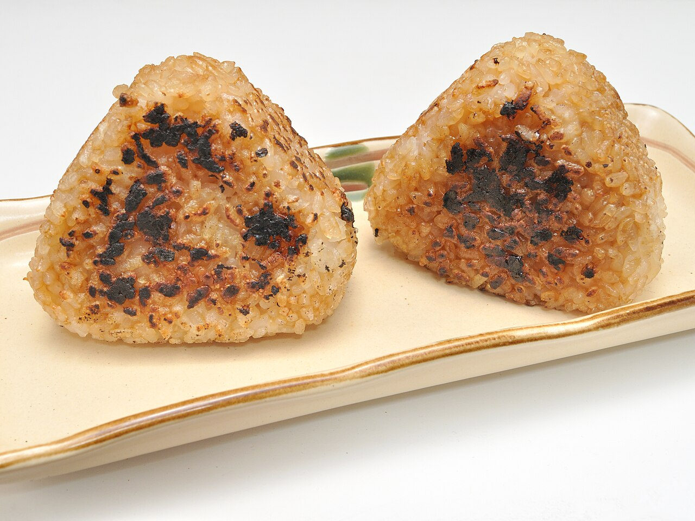
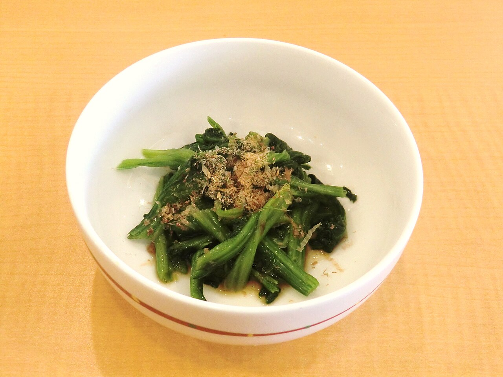
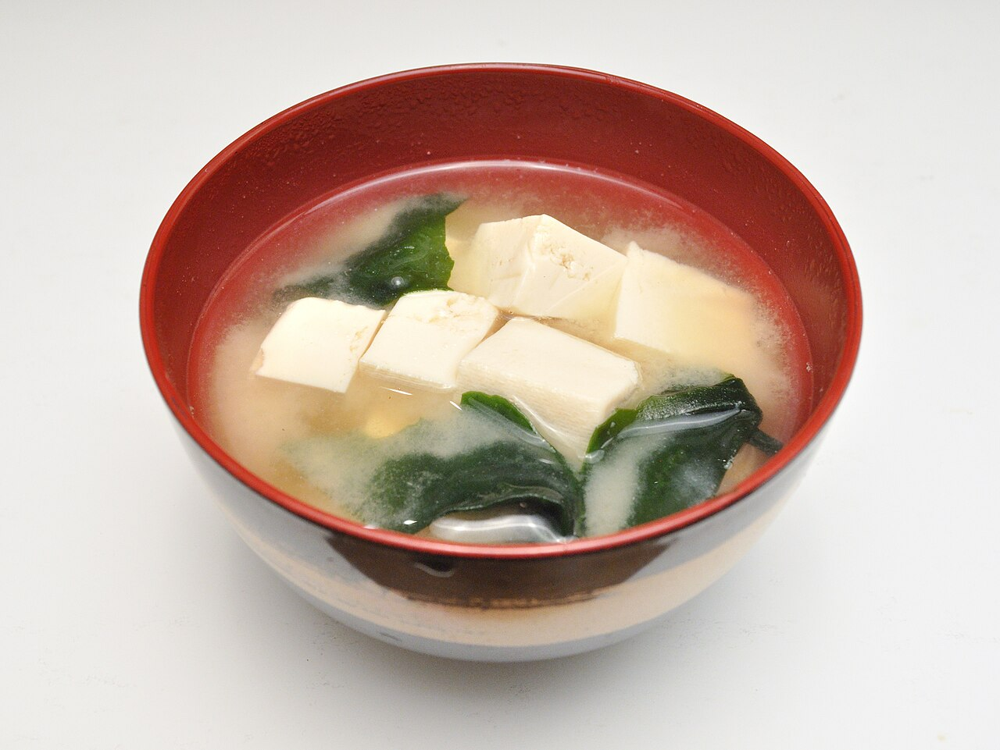
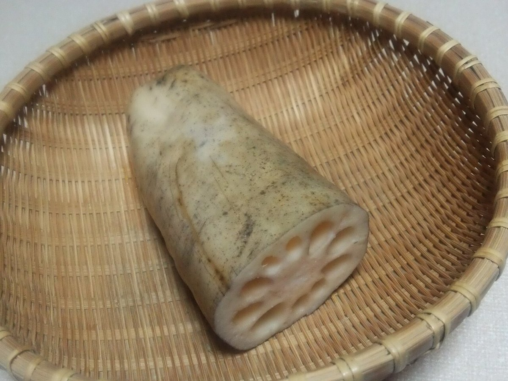
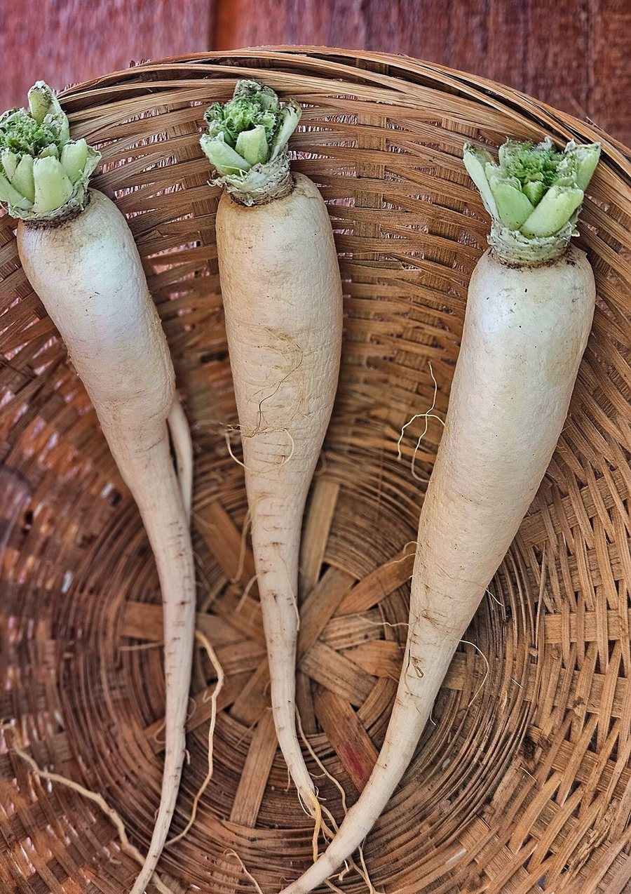

MENU
お品書き
メニューと料金は、お店に確認してから掲載します。いまは準備中です。下の帳面のような枠に、店主さまのお話をもとに書き入れていきます。
お品書き(記入前の見本枠です)
- お料理準備中
- お飲みもの準備中
- 甘いもの準備中
- テイクアウト・ご予約準備中
料理のジャンルや内容は確認できていないため、分類名はあくまで枠の見本です。お店の実際の内容に合わせて作り替えます。
写真のイメージ
下の写真は、ページの雰囲気をつかむためのフリー素材です。お店のお品書きではありません。




